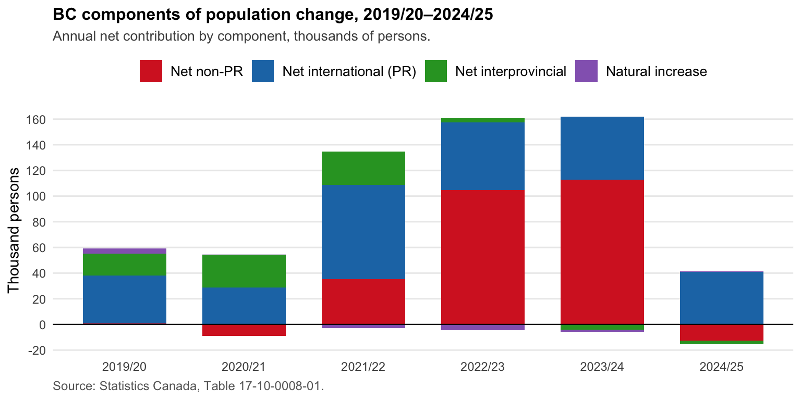
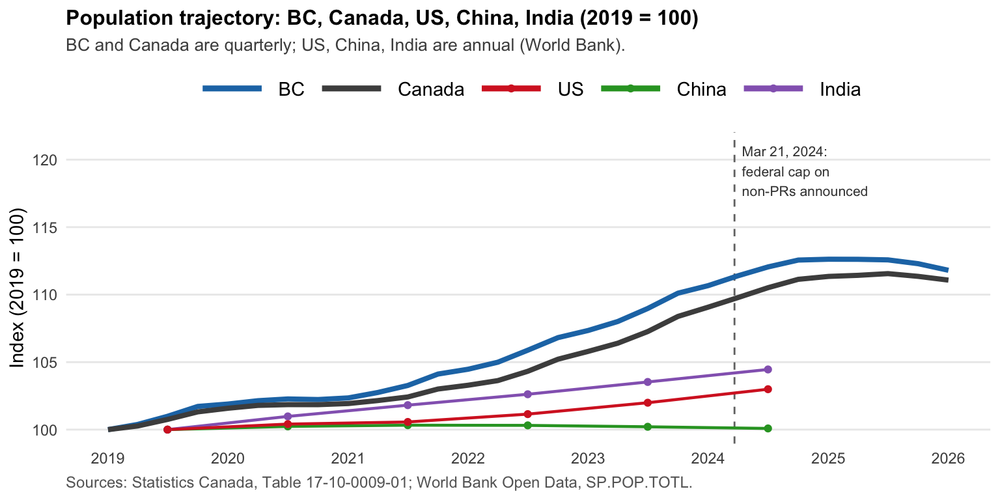
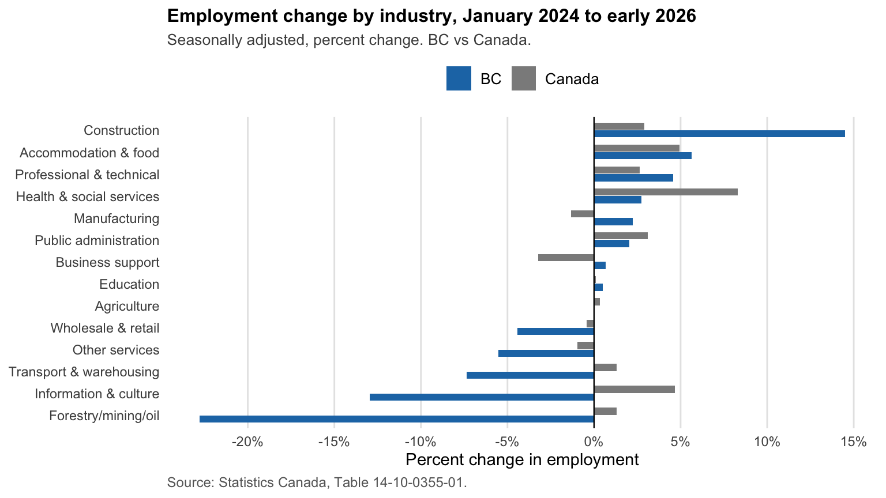

huibin.chang@berkeley.edu
huibin.chang@berkeley.edu 

How Canada’s federal immigration policy reshaped British Columbia’s population, 2019–2025
Note
TL;DR. British Columbia’s population peaked in early 2025 and has fallen since. The reason is not provincial—it is federal. Between 2019 and 2025, three of BC’s four growth drivers (natural increase, interprovincial migration, and permanent-resident immigration) weakened or reversed. The fourth—non-permanent residents (non-PRs)—surged to record highs through 2023/24 and then fell after the federal government announced caps on temporary residents in March 2024. By the peak, non-PRs alone were responsible for two-thirds of BC’s annual growth. When the cap removed that flow, no other component was large enough to hold the line. Canada as a whole shows the same pattern.
Three of four growth drivers weakened; non-permanent residents were the swing
Population change in any province is the sum of four flows:
- Natural increase = births minus deaths.
- Net international permanent residents (PRs) = immigrants landing under the federal Immigration Levels Plan, net of emigrants and small adjustments.
- Net non-permanent residents (non-PRs) = international students, temporary foreign workers, asylum claimants, and other temporary status holders, net of departures.
- Net interprovincial migration = inflow from other provinces minus outflow to other provinces.
Three of the four flows weakened. The fourth swung wildly:
- Natural increase: +3,900 (2019/20) → negative for three consecutive years → +500 (2024/25). BC’s total fertility rate is below replacement; births and deaths are now roughly balanced.
- Interprovincial migration: +26,000 (2021/22) → −4,100 (2023/24) → −2,400 (2024/25). Working-age households leaving BC on net for the first time in years. Cost-of-living and housing-affordability differentials with other provinces, particularly Alberta, are widely cited as contributing factors.
- Net international PRs: stayed in a +30K to +70K range, in line with BC’s allocation under the federal Immigration Levels Plan. The most stable of the four components.
- Net non-PRs: −8,800 (2020/21, COVID exit) → +112,900 (2023/24 peak) → −12,600 (2024/25). The swing factor and the story below.
The 2024 federal cap reversed the largest single source of BC growth
The numbers. Net non-PR change in BC went from −8,800 in 2020/21 (COVID-era exit) to a record +112,900 in 2023/24, and then to −12,600 in 2024/25. By the peak, non-PRs alone accounted for roughly two-thirds of BC’s annual population growth. The Canada-wide pattern is the same in direction and larger in magnitude: net non-PR change at the national level swung from +671,525 (2022/23) to +781,075 (2023/24) and then −14,954 (2024/25).
The policy. The shift was policy-driven. On March 21, 2024, Immigration Minister Marc Miller announced a target to bring non-permanent residents from about 6.2% of Canada’s population in 2023 to 5% by 2027. The target was later reaffirmed in the October 2024 2025–2027 Immigration Levels Plan, with the timeline accelerated to end of 2026. Implementation has cut across study permits (with a federal cap on international students), post-graduation work permits, and temporary foreign worker intake. The 2024/25 numbers in the chart above are the first full-year reading of the new regime.
What it means going forward. The implication for BC’s near-term population path is that federal immigration policy now matters more than provincial economic conditions. If federal targets are loosened, the population path lifts. If they tighten further, the 2026 dip deepens.
BC and Canada populations peaked together in early 2025
Indexed to 2019, BC’s population trajectory ran modestly above Canada’s, both peaked together in early 2025, and both have edged down since the federal non-PR cap was announced in March 2024. By contrast, the United States and India have continued growing through 2024; China’s population is now declining (it peaked around 2022). The fact that BC’s inflection is national, not BC-specific, and contrasts with the trajectories of other large economies reinforces the federal-policy reading.

Construction and healthcare grew; retail and information cooled
A 125,000-person swing in NPRs over a single year (peak to trough in BC) might be expected to depress employment in the sectors NPRs disproportionately fill. The reality is more nuanced. Total BC employment was approximately flat between January 2024 and early 2026 (+0.15%). Underneath that aggregate, sectoral employment shifted sharply.

Sectors where BC outpaced Canada (BC ran hotter than the national pace):
- Construction: BC +14.5% vs Canada +2.9% — BC’s standout sector, about 33,900 net jobs.
- Manufacturing: BC +2.2% vs Canada −1.3% — BC bucked a national decline.
- Business support services: BC +0.7% vs Canada −3.2%.
- Professional & technical services: BC +4.6% vs Canada +2.6%.
- Accommodation & food: BC +5.6% vs Canada +4.9%.
Sectors where BC lagged Canada (or cooled more deeply):
- Forestry, mining, oil & gas: BC −22.8% vs Canada +1.3% — BC’s largest underperformance, off a small base.
- Information & culture: BC −12.9% vs Canada +4.7% — Canada-wide this sector grew; BC cooled hard.
- Transport & warehousing: BC −7.4% vs Canada +1.3%.
- Other services: BC −5.5% vs Canada −1.0%.
- Wholesale & retail trade: BC −4.4% vs Canada −0.4%.
- Health & social services: BC +2.7% vs Canada +8.3% — BC grew but at roughly a third of the national pace; an aging-driven sector where BC is currently underabsorbing demand.
The information & culture gap is worth flagging on its own. The category includes parts of media, broadcasting, and tech-adjacent occupations. BC’s −13% decline against a +5% national gain may reflect both AI-related demand softening for some content roles and BC-specific cooling in tech employment after the post-2020 boom.
For someone considering moving to BC, the sectors hiring most actively are skilled trades (construction), health care, hospitality, and professional services. The sectors absorbing fewer workers are retail, transport, and parts of tech and content production.
BC Stats projects a 2026 dip and gradual recovery to 2035
BC Stats’ provincial projections (published 2024, covering 2024–2046) expect total BC population to remain roughly flat in 2025, decline in 2026 (−45,000 from the 2024 peak), then resume gradual growth—reaching about 5.86 million by 2030 and 6.18 million by 2035. Median age rises from 40.9 (2024) to 46.4 (2046).
The trajectory is conditional on federal non-PR policy stabilising near the announced 5% target and PR landings remaining at planned levels. This is now the largest single source of uncertainty in provincial population forecasting.
Signals to watch in 2026 and after
A few signals are worth tracking over the next 12–24 months for anyone following the Canadian or BC population trend:
- Federal non-PR policy direction. Whether the 5%-of-population target holds, loosens, or tightens will dominate near-term population trajectories.
- Quarterly interprovincial flow. BC’s recent net losses to other provinces are a relatively new pattern; whether they persist through 2026 will affect working-age supply.
- Sectoral wage data. Employment growth in construction, healthcare, and accommodation despite a supply shock suggests wage pressure. Wage releases through 2026 will show whether wages are absorbing the shock or whether shortages persist at flat real wages.
- AI-related occupational shifts. Information & culture’s −13% decline may be an early signal. Whether similar declines appear in administrative support, customer service, and basic content production through 2026–2027 will inform whether AI displacement is becoming visible in standard labour-market data.
Sources and methods
Data. All figures are computed from public sources:
- Statistics Canada, Table 17-10-0008-01: Estimates of the components of demographic growth, annual.
- Statistics Canada, Table 17-10-0009-01: Population estimates, quarterly.
- Statistics Canada, Table 17-10-0005-01: Population estimates by age and sex, annual.
- Statistics Canada, Table 14-10-0355-01: Employment by industry, monthly, by province (LFS).
- BC Stats, British Columbia Population: 2023 Estimates and 2024–2046 Projections, Tables 1 and 3.
- World Bank Open Data: total population (
SP.POP.TOTL), working-age share (SP.POP.1564.TO.ZS), and senior share (SP.POP.65UP.TO.ZS). Pulled via thewbstatsR package. - Immigration, Refugees and Citizenship Canada, 2025–2027 Immigration Levels Plan (October 24, 2024). The 5%-of-population target for non-permanent residents was first announced by Minister Marc Miller on March 21, 2024.
Code and processed data. R scripts and processed CSVs are kept in a project repository; reach out if you would like access for replication.
Disclaimer. Personal data analysis using public sources. Not affiliated with any employer; views are my own.